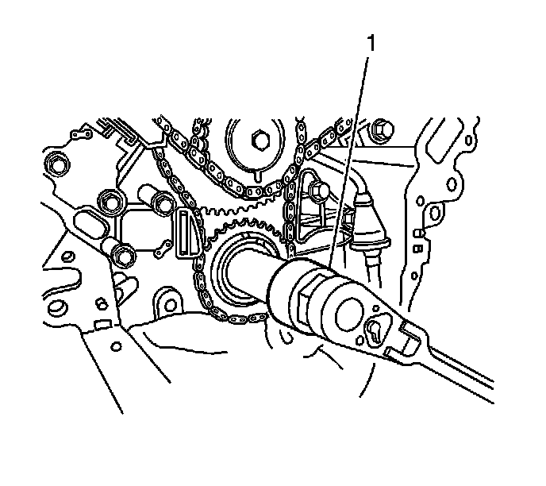
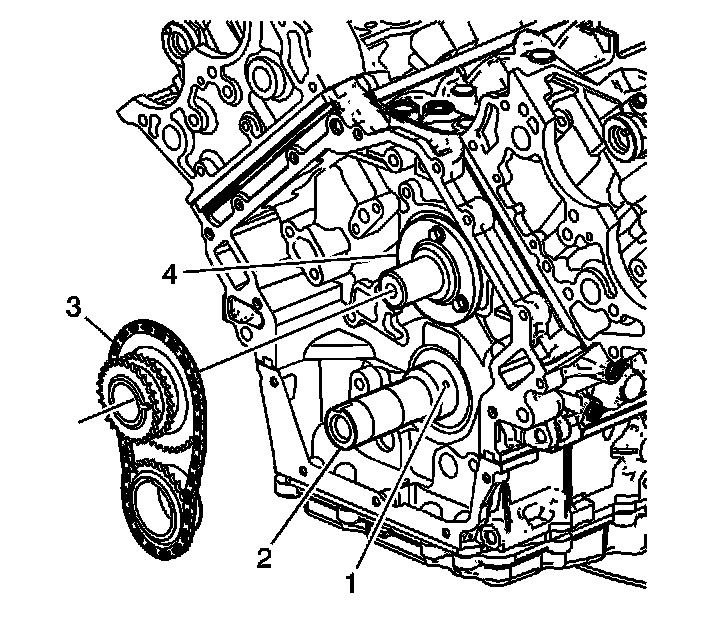
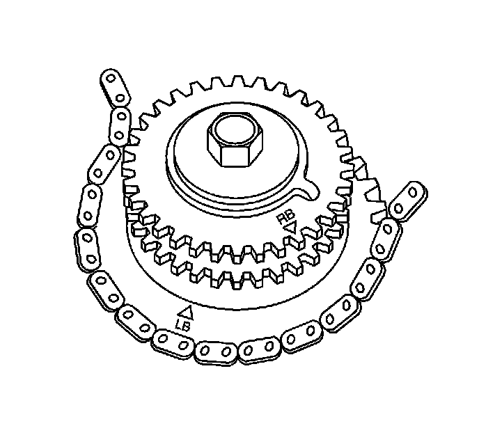
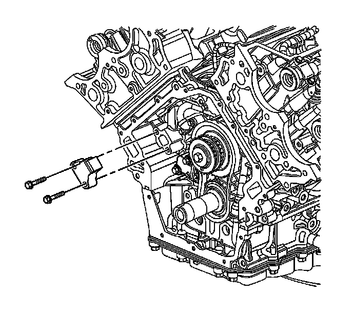
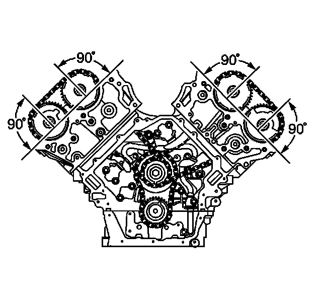

Timing Components: Service and Repair
Setting Camshaft Timing
Tools Required
J 39946 Crankshaft Socket
Setting the camshaft timing is necessary whenever the camshaft drive system has been disturbed such that the alignment relationship between any chain and sprocket has been lost.
The crankshaft and camshafts are correctly timed when the crank sprocket and the intermediate shaft sprocket have their timing marks aligned and all 4 camshaft position actuator timing marks are perpendicular (90 degrees) to the cylinder head deck surface at the top of their rotation. The black timing chain links are used for assembly purposes. Do not reference these black links to determine if the engine timing components are properly aligned. The black links will only align with the actuator timing marks and the intermediate shaft sprocket, once every 126 revolutions. For this reason, it is not necessary to have the black secondary chain links aligned with the timing marks when servicing only one of the secondary timing components. Proper alignment is maintained by marking a chain link and sprocket gear tooth with a paint stick prior to disassembling individual components. When servicing individual components, refer to the appropriate procedure.
1. Remove the following components for access to the timing chains:
* The left camshaft actuator housing-Refer to Camshaft Position Actuator Housing Replacement - Left Side (Camshaft Position Actuator Housing Replacement - Left Side) .
* The right camshaft actuator housing-Refer to Camshaft Position Actuator Housing Replacement - Right Side (Camshaft Position Actuator Housing Replacement - Right Side) .
* The engine front cover-Refer to Engine Front Cover Replacement (Service and Repair) .
* The engine oil pump-Refer to Oil Pump Replacement (Oil Pump Replacement) .
* The right secondary camshaft drive chain-Refer to Secondary Camshaft Drive Chain Replacement - Right Side (Secondary Camshaft Drive Chain Replacement - Right) .
* The left secondary camshaft drive chain-Refer to Secondary Camshaft Drive Chain Replacement - Left Side (Secondary Camshaft Drive Chain Replacement - Left) .
Important: The primary gears and chain must be properly timed prior to setting the left or right secondary camshaft timing.

2. Use the J 39946 (1) in order to rotate the crankshaft.

3. Using the J 39946 , rotate the crankshaft until:
1. The primary timing gear alignment mark (1) is at the top of its position,
2. The crankshaft keyway (2) is approximately at the 1 o'clock position,
3. The intermediate sprocket timing mark (1) is at the bottom of its rotation, adjacent to the crank gear timing mark.

4. Timing the primary timing gears ensures that the #1 cylinder piston, bank 1 right front cylinder, is at top dead center (TDC) beginning its power stroke event. If this condition can not be accomplished while rotating the crankshaft (2), remove the primary gears and chain (3) and realign the primary timing marks. Refer to Primary Camshaft Drive Chain Removal (Overhaul) and Primary Camshaft Drive Chain Installation (Overhaul) .

5. The left bank 2 secondary timing chain (2) has 3 black links that aid in timing the camshaft position actuators to the intermediate sprocket.
6. The black link (4) is aligned with the bank 2 exhaust actuator timing mark. The black link (3) is aligned with the bank 2 intake actuator timing mark.
7. The black link (1) is aligned with the intermediate sprocket.

8. The intermediate sprocket left bank 2 timing mark is labeled left bank (LB) as shown.
9. Assemble the secondary timing chain to the intermediate sprocket aligning the sprocket LB timing mark to the timing chain black link.

10. Locate the timing mark (1) on the front of the intake actuator marked LI which stands for left intake.

11. Align the timing mark (5) of the left bank intake camshaft position actuator with the timing chain black link (3) and install the actuator on the camshaft with the actuator timing mark perpendicular (90 degrees) to the cylinder head deck surface at the top of its rotation. Ensure that the camshaft alignment pin hole on the rear of the actuator engages with the camshaft alignment pin. If necessary, use an open-end wrench on the hex cast into the camshaft to obtain proper camshaft pin to actuator engagement.
12. Loosely install the oil control valve (10) to secure the intake actuator.

Notice: Refer to Torque Reaction Against Timing Drive Chain Notice (Torque Reaction Against Timing Drive Chain Notice) .
Notice: Refer to Fastener Notice (Fastener Notice) .
13. Use an open-end wrench on the hex cast into the camshaft in order to prevent the camshaft from rotating when tightening the oil control valve.
Tighten the oil control valve to 120 N.m (89 lb ft).

14. Locate the timing mark (1) on the front of the exhaust actuator marked LE which stands for left exhaust.
15. Align the timing mark (7) of the left bank exhaust camshaft position actuator with the timing chain black link (4) and install the actuator on the camshaft with the actuator timing mark perpendicular (90 degrees) to the cylinder head deck surface at the top of its rotation. Ensure that the camshaft alignment pin hole on the rear of the actuator engages with the camshaft alignment pin. If necessary, use an open-end wrench on the hex cast into the camshaft to obtain proper camshaft pin to actuator engagement.
16. Loosely install the oil control valve (8) to secure the exhaust actuator.

Notice: Refer to Torque Reaction Against Timing Drive Chain Notice (Torque Reaction Against Timing Drive Chain Notice) .
17. Use an open-end wrench on the hex cast into the camshaft in order to prevent the camshaft from rotating when tightening the oil control valve.
Tighten the oil control valve to 120 N.m (89 lb ft).

18. Install the left secondary timing chain tensioner. Refer to Secondary Camshaft Drive Chain Tensioner Replacement - Left Side (Secondary Camshaft Drive Chain Tensioner Replacement - Left) .

19. The right bank 1 secondary timing chain has 3 black links that aid in timing the camshaft position actuators to the intermediate sprocket.
20. The black link (2) is aligned with the bank 1 exhaust actuator timing mark. The black link (3) is aligned with the bank 1 intake actuator timing mark.
21. The black link (1) is aligned with the intermediate sprocket.
22. The intermediate sprocket right bank timing mark is labeled right bank (RB) as shown.
23. Assemble the secondary timing chain to the intermediate sprocket aligning the sprocket RB timing mark to the timing chain black link.
24. Locate the timing mark (1) on the intake actuator marked RI which stands for right intake.

25. Align the timing mark (5) of the right bank intake camshaft position actuator with the timing chain black link (8) and install the actuator on the camshaft with the actuator timing mark perpendicular (90 degrees) to the cylinder head deck surface near the top of its rotation. Ensure that the camshaft alignment pin hole on the rear of the actuator engages with the camshaft alignment pin. If necessary, use an open-end wrench on the hex cast into the camshaft to obtain proper camshaft pin to actuator engagement.
26. Loosely install the oil control valve (2) to secure the intake actuator.

Notice: Refer to Torque Reaction Against Timing Drive Chain Notice (Torque Reaction Against Timing Drive Chain Notice) .
27. Use an open-end wrench on the hex cast into the camshaft in order to prevent the camshaft from rotating when tightening the oil control valve.
Tighten the oil control valve to 120 N.m (89 lb ft).
28. Locate the timing mark (1) on the actuator marked RE which stands for right exhaust.
29. Align the timing mark (3) of the right bank exhaust camshaft position actuator with the timing chain black link and install the actuator on the camshaft with the actuator timing mark perpendicular (90 degrees) to the cylinder head deck surface near the top of its rotation. Ensure that the camshaft alignment pin hole on the rear of the actuator engages with the camshaft alignment pin. If necessary, use an open-end wrench on the hex cast into the camshaft to obtain proper camshaft pin to actuator engagement.
30. Loosely install the oil control valve (1) to secure the exhaust actuator.
Notice: Refer to Torque Reaction Against Timing Drive Chain Notice (Torque Reaction Against Timing Drive Chain Notice) .
31. Use an open-end wrench on the hex cast into the camshaft in order to prevent the camshaft from rotating when tightening the oil control valve.
Tighten the oil control valve to 120 N.m (89 lb ft).

32. Install the right secondary timing chain tensioner. Refer to Secondary Camshaft Drive Chain Tensioner Replacement - Right Side (Secondary Camshaft Drive Chain Tensioner Replacement - Right) .
33. Remove the EN 46328 .

34. Ensure the correct alignment of all secondary timing components.
35. Ensure the correct alignment of the primary timing drive components (1).
36. Install the engine oil pump. Refer to Oil Pump Replacement (Oil Pump Replacement) .
37. Install the engine front cover. Refer to Engine Front Cover Replacement (Service and Repair) .
38. Install the right camshaft actuator housing. Refer to Camshaft Position Actuator Housing Replacement - Right Side (Camshaft Position Actuator Housing Replacement - Right Side) .
39. Install the left camshaft actuator housing. Refer to Camshaft Position Actuator Housing Replacement - Left Side (Camshaft Position Actuator Housing Replacement - Left Side) .